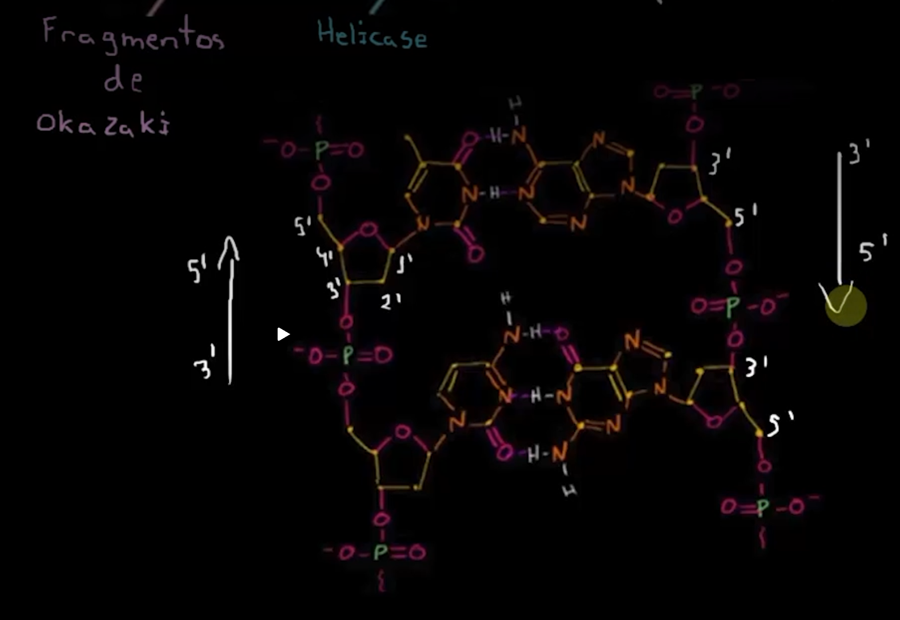
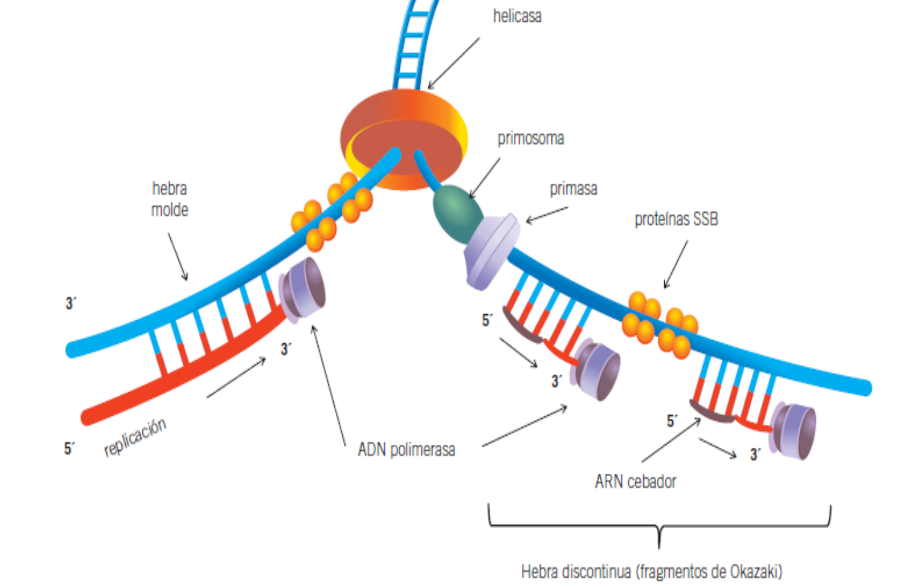
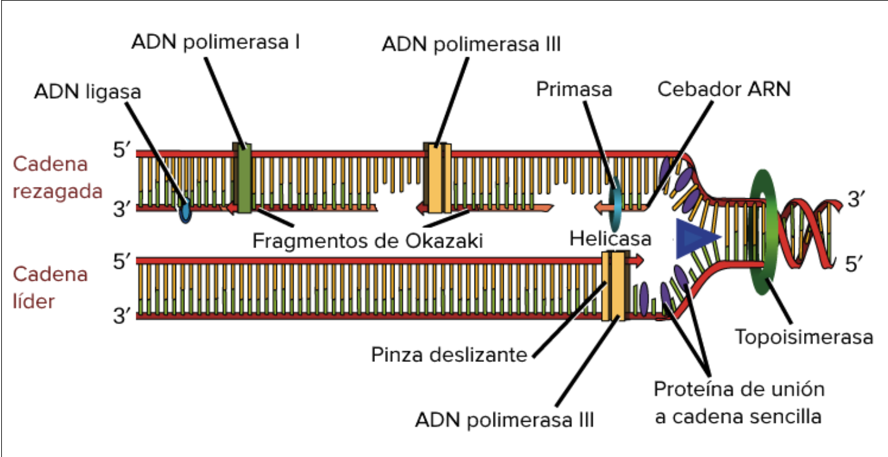

Semiconservadora · Bidirecional · Antiparalela · Forquilha de Replicação · Fase S do Ciclo Celular · P1 Biologia Geral — UNINTER
1. Por que o DNA Precisa ser Replicado?
Uma das características mais notáveis do DNA é sua capacidade de se replicar com fidelidade extraordinária. A replicação ocorre durante a Fase S do ciclo celular e é um pré-requisito obrigatório para a divisão celular:
Regra de Ouro
Sem replicação completa do DNA → não há mitose. O ponto de controle G2/M garante que a fase M só comece após toda a replicação ter sido concluída e os erros reparados.
2. As 3 Características Fundamentais
Semiconservadora
Cada molécula-filha conserva 1 fita original + 1 fita nova sintetizada. Comprovado por Meselson e Stahl (1958) com N¹⁵.
Bidirecional
A partir de cada origem de replicação (ORI/ARS), o DNA se replica nos dois sentidos simultaneamente, formando 2 forquilhas opostas.
Antiparalela
As duas fitas do DNA são antiparalelas (5'→3' e 3'→5'). A síntese sempre ocorre 5'→3', o que cria o problema da fita retardada.
Por que Múltiplas Origens em Eucariotos?
O DNA eucariótico é enorme. Com uma única origem, levaria meses para replicar. Por isso, eucariotos têm múltiplos sítios ORI (ricos em A:T — mais fáceis de separar) que permitem replicação multifocal simultânea. Cada unidade gerenciada por um ORI é chamada de replicon.

Estrutura molecular da fita de DNA, mostrando os fragmentos de Okazaki (fita retardada) e a ação da Helicase na separação das fitas complementares (Prof. Verónica Ramírez — UNINTER)
3. A Maquinaria da Replicação — As Enzimas

Forquilha de replicação em 3D: helicasa abre a dupla hélice, primosoma + primasa sintetizam o cebador ARN, proteínas SSB protegem a fita singleira, ADN polimerase sintetiza as novas fitas (OpenStax / UNINTER)
Enzima / Proteína
Função
Analogia
Helicase
Separa as duas fitas do DNA hidrolisando as pontes de hidrogênio entre as bases nitrogenadas. Avança abrindo a forquilha.
"Abre o zíper" da dupla hélice
Topoisomerase I e II
Alivia a tensão à frente da forquilha cortando e religando o DNA (evita superenrolamento que pararia a replicação)
Remove o "torção" que se forma à frente do zíper
Proteínas SSB (RPA em eucariotos)
Ligam-se à fita simples separada pela helicase, impedindo que as fitas se renaturem e protegendo contra nucleases
"Escoras" que mantêm o DNA aberto
Primase
Sintetiza um pequeno fragmento de RNA (~8–10 nucleotídeos) chamado cebador (primer), ponto de partida para a DNA polimerase
"Ignição" — a DNA pol não consegue começar do zero
DNA Polimerase (δ na fita lenta; ε na fita rápida)
Lê a fita molde 3'→5' e adiciona desoxinucleotídeos na direção 5'→3'. Principal enzima da elongação
A fábrica que constrói a nova fita
PCNA
Proteína de processividade — mantém a DNA polimerase presa à fita molde para não se desprender durante a elongação (clamp deslizante)
"Grampo" que segura a polimerase no trilho
RNase H1 + FEN1
Removem os cebadores de RNA dos fragmentos de Okazaki; FEN1 (Endonuclease flap 1) remove o ribonucleotídeo 5' terminal
Remove o "andaime" após a construção
DNA Ligase I
Sela o nick (quebra de fita simples) formando o enlace fosfodiéster entre fragmentos de Okazaki adjacentes
"Cola" os fragmentos em uma fita contínua
Telomerase
Ribonucleoproteína com atividade de transcriptase reversa — sintetiza DNA de telômero (TTAGGG repetições) para compensar o encurtamento dos extremos cromossômicos
Regenera as "pontas" dos cromossomos
4. Fita Líder vs Fita Retardada — O Problema da Antiparalela

Forquilha de replicação: cadeia líder (síntese contínua) vs cadeia rezagada (fragmentos de Okazaki separados por cebadores ARN). ADN polimerase I remove primers; ADN ligase sela as lacunas (Prof. Verónica Ramírez — UNINTER)
Fita Líder (Leading Strand)
Molde orientado 3'→5' em relação à forquilha
DNA pol lê 3'→5', sintetiza 5'→3' — mesma direção da forquilha
Síntese contínua — precisa de apenas 1 primer
Fita Retardada (Lagging Strand)
Molde orientado 5'→3' em relação à forquilha
A síntese 5'→3' vai no sentido contrário à forquilha
Síntese descontínua — fragmentos de Okazaki, cada um com seu primer
5. Fragmentos de Okazaki
Descobertos pelos japoneses Reiji e Tsuneko Okazaki na década de 1960. São fragmentos curtos de DNA sintetizados na fita retardada. Em eucariotos: ~100–200 pares de bases. Em procariotos: ~1000–2000 pb.
1
A forquilha avança e expõe um trecho da fita retardada
2
Primase sintetiza um cebador de RNA (~10 nt) na fita exposta
3
DNA Pol δ + PCNA estendem o fragmento até o próximo primer (do fragmento anterior)
4
RNase H1 + FEN1 removem o cebador de RNA
5
DNA Pol preenche a lacuna com DNA; DNA Ligase I sela o nick
6. Fases da Replicação: Iniciação → Elongação → Terminação
Iniciação
Proteínas ORC (Origin Recognition Complex) reconhecem os sítios ORI — sequências de ~300 pb, ricas em A:T (mais fáceis de separar)
Helicase se liga e hidrolisa as pontes de H entre as bases — abre a "bolha de replicação"
Cada bolha tem 2 forquilhas — uma vai para a direita, outra para a esquerda (bidirecionalidade)
Primase sintetiza o primeiro cebador — ponto de partida obrigatório para a DNA polimerase
Elongação
DNA Pol δ/ε + PCNA adicionam nucleotídeos um a um, lendo a fita molde
Topoisomerases I e II cortam e religam o DNA à frente da forquilha, aliviando o superenrolamento
As bolhas de replicação vizinhas se fundem quando as forquilhas se encontram
Remoção dos últimos primers, preenchimento das lacunas e selagem pela Ligase
Nas extremidades dos cromossomos, a Telomerase atua para evitar o encurtamento progressivo
7. Telomerase — A Enzima dos Telômeros
Toda vez que o DNA se replica, a fita retardada perde um fragmento na extremidade (o primer do último fragmento é removido e não há mais molde para preenchê-lo). Sem correção, os cromossomos encurtariam a cada divisão — o problema da replicação dos telômeros.
Como a Telomerase Resolve
A telomerase carrega seu próprio RNA molde (com a sequência AAUCCC) e usa atividade de transcriptase reversa para sintetizar sequências repetitivas de DNA (TTAGGG) no extremo 3' do cromossomo. Isso cria molde suficiente para a primase e a DNA pol completarem a fita complementar.
Telomerase INATIVA
Células somáticas adultas — telômeros encurtam com as divisões → limite de Hayflick (~50 divisões) → senescência
8. Fidelidade e Reparo
Alta Fidelidade
A DNA polimerase tem atividade de proofreading (3'→5' exonuclease): reconhece e remove nucleotídeos mal incorporados imediatamente. Taxa de erro: ~1 em 10⁹ pares de bases — equivalente a copiar 3 bilhões de letras com menos de 3 erros.
9. Relevância Clínica
Câncer e Telomerase
Células cancerígenas reativam a telomerase — isso lhes confere imortalidade replicativa. Inibidores de telomerase estão sendo estudados como alvos terapêuticos.
Xeroderma Pigmentosum
Defeito no sistema de reparo de DNA por excisão de nucleotídeos (NER). Pacientes não conseguem reparar danos causados por UV → altíssimo risco de câncer de pele.
Antivirais e Antibióticos
Antivirais como o Aciclovir imitam nucleotídeos e bloqueiam a DNA pol viral. Quinolonas (antibióticos) inibem a topoisomerase bacteriana (DNA girase) — não têm efeito em eucariotos.
PCR — Replicação in vitro
A PCR (Reação em Cadeia da Polimerase) usa primers sintéticos + DNA polimerase termoestável (Taq pol) para replicar um fragmento específico de DNA bilhões de vezes — base do diagnóstico molecular (COVID-19, HIV, genética forense).